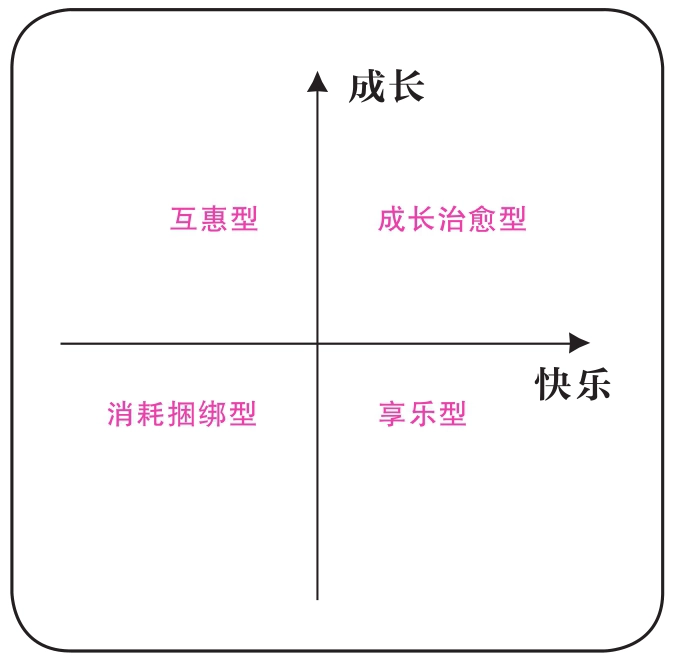

书摘

进入爱情
四种途径
爱的本质是给予的快乐。 当大家都习惯于被爱，而缺乏主动去爱的能力时，爱情由此而变得非常困难。
一见钟情
我们还要学会欣赏别人的外貌，包括主动接受男性的性魅力，这样才能提高一见钟情的概率。 发自本能的喜欢太难得，一旦遇到这样的机会，请好好珍惜，勇敢一点，不管成功还是失败，至少这段感情会特别独特。 我们的目标是具备更好地享受当下生活的能力，而不是一定要和某个人在一起。
日久生情
爱情三角理论包含亲密关系、性唤醒和承诺三个方面，如果拿掉性唤醒和承诺，剩下的亲密关系也可以是友谊，所以友谊和爱情的区别主要在于有没有激情。 当我们不再把友谊和爱情对立起来时，我们不仅能更好地理解亲密关系，也解决了另一个重要问题：爱一个人并不意味着占有。 爱情或者任何一种亲密关系中，你都不可能完全拥有一棵树，因为每棵树都是独立的，你无非是跟这棵树形成了连理枝，这并不影响你去享受阳光雨露，也不影响你去欣赏整片森林的美。 对亲密的概念界定能让我们既打开世界，拥抱整片森林，又享受彼此之间有安全感的爱情。 对这部分人来说，首先要做的是打开对亲密关系的想象力，先学会交朋友。 爱情需要我们对他人有好奇心：我想要去了解你，我想要来帮助你，我想要跟你形成联结。在这一过程中，我们遇到了那个不论是思想还是身体都想靠近的人，这时候自然而然产生了爱情。所以爱情是结果而不是目标。 我们在交朋友时，首先关注的是这个人的特性，而不是他／她的性别。 日久生情是自然而然又非常难得的结果，所以放轻松，多交朋友，学会联结，期待奇迹。
相亲
我们在进入爱情之前，肯定希望结识更多人，相亲其实就是帮我们拓展朋友圈，给我们提供了一个从互惠型模式走入爱情的机会。 如果要提高相亲的效率，请记得每一次都是去结交一位新朋友，带着好奇心去了解对方，对对方感兴趣。但如果觉得没有进一步了解的欲望，这也是正常的，没有好坏，只有适合与否。很多时候，无法成为恋人，但交到了一个不错的朋友，也是一种收获。
网恋
网络也只是一种中介，先认识一个人而已，线下才是你们感情真正开始的地方，见面时可以稍微把自己的想象放一放，去认识一个真实的人，判断这个人能不能成为朋友，然后再考虑关系能否更长久。 不要一开始就用爱情模式的框架局限了发展的可能性，要看到那个具体的人，也让别人看到具体的你。用更开放的心态接受更为多元的亲密关系的开始，这样才能回到感情的本质：人与人的吸引。 任何一段感情都可以从淡到浓一步步发展，我们没有必要把友谊、合作伙伴跟爱情统统对立起来。很多时候，我们欠缺的不是进入爱情的能力，而是常规意义上的交友能力。学习进入爱情，在本质上是学习怎样和世界、和他人更好地相处。爱情教我们怎么去跟别人沟通，一方面要坚持自我，另一方面也要不断更新自我。爱情给了我们和外部世界深度碰撞的机会。
排除Mr.Wrong
弗洛姆跟我有类似的观点，他说人们常常觉得爱很简单，找到对的人，爱情就开始了，但实际上这是错的，爱是一种能力，你遇到一个人，甚至遇到好几个人，选择其中一个，我们互相学习如何去爱，爱情才会变得美好。 为什么女生对男生一无所知就是纯情，男生对女生一无所知就是“直男”甚至“直男癌”？也就是说，男性不被女性了解不仅不是一个缺点，甚至还是一个优点。 文化有滞后性，女性虽然独立自主了，但爱情旧脚本的浪漫气息还滞留在心中，我们仍旧特别希望遇到一个懂我们的Mr.Right，帮我们做正确的决策，降低做决策的风险。 你真正要做的，不是找到Mr. Right，而是排除掉Mr.Wrong。理清你的底线，排除Mr. Wrong，要比寻找Mr. Right更能给自己机会。
第一个方法，三条底线原则。
你可以想象你未来的伴侣，他身上有哪三个问题是你绝不能忍受的？ 你吃饭不好好吃，以后你喜欢的姑娘长得比你高，那怎么办呢？没问题啊，你看王祖蓝就找了个比他高很多的老婆。
- 拿出一张纸，在纸上列出所有你找对象时非常在意的点。
- 想象你现在遇到的人或多或少都有你写的那些缺点，划去那些相较而言能接受的缺点。
- 强迫自己最后只留下三个在意的点，作为你的底线。
底线是你不能忍受的问题，而不是你希望的特点。
第二个方法，每一段感情经历都是我们更新Mr. Wrong清单的机会。
人在年轻时并不知道自己的底线是什么，我们需要不断地经历一些事情才会更了解自己。 关心和控制是没有严格界限的，你需要它的时候就是关心，不需要它的时候就是控制。 每一段恋情其实都是在帮助我们成长，成功也好，失败也好，我们都会从中逐渐发现自己的底线，哪些是真的不能接受的，哪些只是自以为不能接受的。 当出现一条新的底线的时候，务必要和原来的底线做比较，看看是不是更难接受，只有更难接受才能替换原来的底线。
第三个方法，不要总是纠结于应该选谁，而是多问问自己为何不能选谁。
A有什么让你难以接受的？B有哪些让你不能选他的原因？这样思考过后的决策往往更贴近现实。 排除掉Mr. Wrong以后，你再去找一个让你觉得快乐的或者让你觉得有益的人进入更深的关系里。 为什么说爱情是个体成长的路径之一？就是因为在这一过程中，我们慢慢学着了解自己，明白自己到底最在乎什么，这是需要一个过程的。 在恋爱中，我们慢慢成长，也慢慢影响我们的爱人。在时间的打磨下，那个一开始看上去不是Mr. Right的人，到最后会成为你的Mr. Right。这个专为你定制的恋人，他并不见得适合别人，也不是别人眼里所谓的最好的那一个，但他却是最适合你的。
- 底线题涉及“我们”的重要事宜，这些问题最好在初期关系中双方能达成一致。如果双方找到了底线一致的人，未来面临的冲突就不会那么剧烈，需要做结构性调整的可能性也会变得更小。
- 关键题是指那些对关系很重要，但并非要求答案一致的题目，只要能协商出一个双方都能接受的方案就可以。
- 差异题是指那些在初期关系和长期关系中会有不同影响的特征或问题，能打开大家对差异的想象。
- 开放题是指那些拓展亲密关系边界，但一致与否并不重要的题目。我们希望通过这些题目能帮助每个人去探索自己和关系中的底线。
其实在和任何一个人交往的过程中，也需要确立一些行为底线来保护自己的利益。 当我们既有Mr. Wrong的三条底线，又有行为的三条底线的时候，我们就能在保障自己安全和利益的前提下，展开交友之旅。你要相信，总有一天我们会遇到一个渴望和他／她形成更亲密联结的人。 预防风险的逻辑和追求幸福的逻辑是不同的两种逻辑。排除Mr. Wrong是预防风险的逻辑，把除感情以外的其他风险首先排除掉，然后我们学着信任他人，尝试和他人形成联结，进而找到一个人变成“我们”，幸福就慢慢展开了。
主动追求爱
当年，我先生向我表白，我立马说好的好的。 我一直坚定地认为，对两性关系乃至所有人际关系来说，坦诚和真实是基础，所有的小心机、小功利到最后都会让你付出大代价。 故弄玄虚的矜持引发两个问题。第一，容易产生误解，对方不知道你说的“是”和“不”究竟是什么意思。第二，容易破坏信任，不断被考验、被测试的感觉相当不舒服，优秀的男性会认为你凭什么要来测试我？ 一个女性说“不”时，她真的是在说“不”，如果说“不”的力量被削弱，那我们说“是”的力量也会被削弱。故作矜持常常让“是”和“不”都失去力量，所以在爱情脚本中，这是需要更新的理念。 当爱情成为一种竞争关系的时候，维护爱情就成为很艰难的一件事，因为你我是对手，而非合作伙伴。我们如何共同做好一件事？ 他认为人们在人际交往的过程中都会追寻自尊感，别人对我的正向反馈越多，我的自尊感就越强。 今天，男性也在追求自己的自尊感，所以很多成年男性不再追求女性了。第一，怕麻烦，他们根本搞不懂女性那些似是而非的心理。第二，恋爱的替代品很多，宅在家里看片、打游戏，都能给他同样的快乐。第三，恋爱的开销实在太大，要花时间、金钱、精力，还要考虑买房子等现实问题，想想就令人头大，索性放弃了。第四，有些男性认为儿女情长阻碍了事业发展，一不小心还会成为“舔狗”或“备胎”，待到事业有成那天，自会有人来追求——男性也希望被追求，也在追求自尊。 我的建议是：勇敢点，不要（上尸下从）。
发起者优势
在爱情中，如果你首先去接近别人，你往往会选择接近比自己条件更好的人，并设法跟对方保持长期的良性互动。德里克的研究鼓励不论男女，都勇敢一点，首先发起关系联结，开启一份你想要的爱情。 在现代社会，我们的择偶选择权在自己手上，当然要找一个你很爱他、他也很爱你的人。 德里克的研究强调“发起者优势”，但并不是让女性看到理想型，就马上跑上去说：“我喜欢你，我们能交往吗？”很多男性可能还处在爱情旧脚本中，这么做很可能会把他吓跑。你可以等到两人的关系到了“隔层纱”的时候再挑明。 一是给对方接近自己的机会，二是创造“第二空间”，三是主动肯定。
第一个方法，给对方接近自己的机会。
当你有心仪的人时，你得释放信号：我有时间，我希望你再往我这边靠近一步。
- 第一，留意谁的眼光总是在你身上停留。
- 第二，留意谁愿意接你的话头，愿意和你交流，或者虽然不接你的话，但是会用点头等方式表示自己在认真倾听。
- 第三，也是最重要的，留意对方是否在缩小和你的身体距离。
第二个方法，创造“第二空间”，这个概念是我自创的。
男女主角既是师生关系，又是邻居关系，有更多的条件可以在一起。“第二空间”让男女关系产生特殊性。 “第二空间”既可以是物理空间，也可以是虚拟空间，比如玩游戏时在同一个队里。如果你觉得某人很好，不如先尝试和对方建立“第二空间”，既能找到共同爱好，又能使关系产生特殊性，一举两得。
第三个方法，主动肯定。
我鼓励大家主动肯定他人，但并不鼓励很快主动表白。因为今天的爱情和自我价值紧密相连，无论做多好的心理建设，被拒绝总是不好受的。恋爱💕
我发现你在调焦时特别有耐心，你很喜欢在选景时做多种尝试，我觉得这真的很棒。
在这个孤独的社会里，每个人都希望得到别人的关注，这种肯定能带来能量，也是交朋友的重要前提。
什么时候表白
第一种是你做了很多努力，可你们的关系并没有升温，总是保持一开始的状态，那你失败的可能性是很大的。对方没有给你足够的回应，常常是因为他没有和你同等的热情。 第二种是你们的关系虽然一直在升温，你也给了他几次机会，尤其是身边的朋友都经常起哄，但是他一直没有利用这些机会。你需要去判断他是真傻还是装傻。有时候，他会有自己的疑虑，可以通过其他人去了解他到底在犹豫什么。 有时候，错过也就错过了。好的感情需要天时、地利、人和，所以暂时的放弃没什么大不了的，不要把错过看作错误，有时候仅仅是双方都还没有勇敢起来而已。 如果你不想错过，就勇敢一点，即使被拒绝也没关系，只是时间和人不匹配而已，而不是失败或自己不够好。 别人的追求是对我们的肯定；但如果你喜欢上一个很好的人，对方不接受你，并不意味着你不够优秀，恰恰相反，你能看到别人的优秀，说明你是有鉴赏力的，同样也很棒。 我一直觉得独特的自我不等于孤独的自我，**与社会建立更紧密的联结，有利于提高我们生活方方面面的质量。**与更多的人形成联结，去看见他人，主动肯定他人，这不仅仅是为了进入爱情，也是为了让我们的生活本身变得更丰富多彩。 当你遇到理想的对象，应该勇敢点。
走出原生家庭
过去发生的任何事对未来都没有绝对影响，关键在于你如何赋予你的经验以不同意义。 创伤可能是你无法前进的原因，但也可能是让你成长得更快的挑战，就如同感冒、发烧可能会让你处于不健康状态，但也可能提高身体免疫力，让未来的你更健康。 所谓的成长其实就是不断更新对社会的认识，而社会是在下一代人跳出上一代人的制约中不断发展起来的。 如果你现在适应得很好，活得很开心，那你很幸运，需要感谢父母。但如果你现在经常感到力不从心，觉得生活跟想象中的不同，那也不要怨恨，绝大部分的父母并不是故意要来伤害你或捆绑你，他们只是受时代的限制，给了你一套他们自认为正确的逻辑体系。 重新赋予那些可能的创伤或挫折以积极意义，调整不适应今天社会规范的部分，积极主动地应对变化，不断更新自己，不断走向成熟。 生活在某种文化中的人，要对自己的文化有自知之明，你要知道它是怎么来的，怎么形成的，是如何在生活的方方面面起作用的。 第一，你要有意识地认识自己的文化，不要认为日常生活中所有的文化行为都是理所当然的。第二，要根据所处环境的不同，对原有文化进行取舍。第三，要对新文化进行取舍。最后你会形成一套完整的逻辑体系——哪些要遵守，哪些要改变。 为什么说爱情是自我成长的途径？就是因为爱情给了你一个机会，走出原生家庭的脚本。只有跟真实的人碰撞，你才知道边界在哪里，知道什么样的选择会带来什么样的后果。在实践爱的过程中，你的认知就有机会得到真正的改变。
核心情结
当我们和一般朋友交往的时候，往往不会触及这些深层的核心情结，但是它往往容易在亲密关系中被引爆。 相对的，亲密关系最大的益处，是我们有了很多宝贵的机会去发掘、认识这些潜藏在心底的核心情结，我们得以更深入地了解自己与伴侣，从潜意识的主宰状态中解脱出来，用更为健康的行为模式来重塑我们的爱情和婚姻，而伴侣给我们的爱是非常重要的支持力量。 抛弃全世界，去一意孤行，哪怕只换回那个一知半解的自己。 爱情给了我们一个机会，通过跟别人发生碰撞，看到原生家庭所赋予的社会化如何压抑了自己，看到过去规范的不适用，从而给了我们勇气和机会来重新发展自我，重新找到和他人联结的方式。关键在于你有没有抓住爱情这个机会让自己成长。如果你能抓住机会，认真了解哪些是你无法忍受的，哪些是值得你珍惜的，那这就是一份有价值的爱情。 爱情里所有的关系首先是你和自己的关系，爱情给了我们一个看见自己的契机。 只要你的内心告诉你，对方是让你更舒服的那个人就可以了。剩下的问题，可以两个人一起解决！ 我们通过爱情不断地去和他人发生碰撞，思考自己想要的爱到底是什么。在这个过程中，我们学习倾听别人的需求，真实地表达自己的想法，同时争取自己想要的东西。 成长最重要的力量源于自己，而爱情就是一次能借助他人力量的宝贵机会，别错过它。